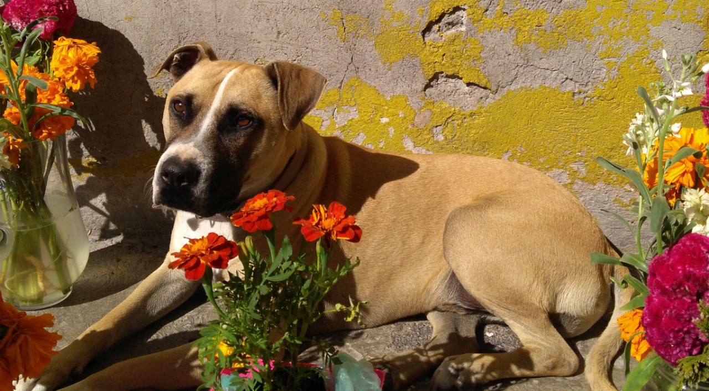
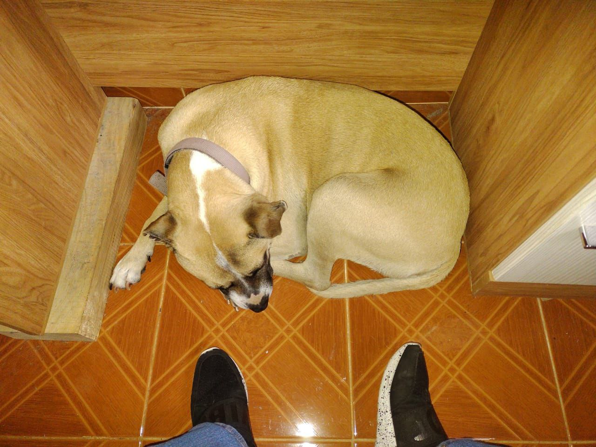
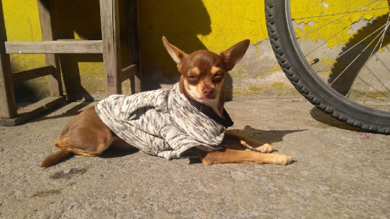
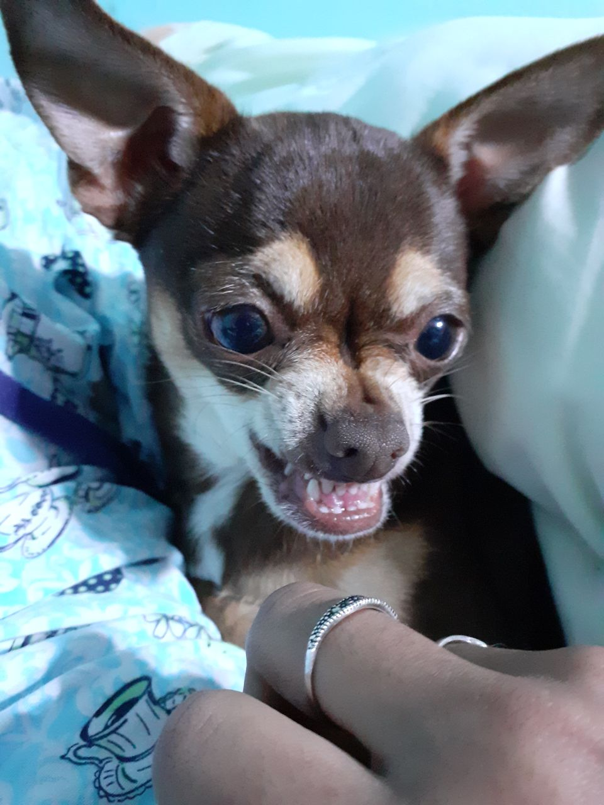
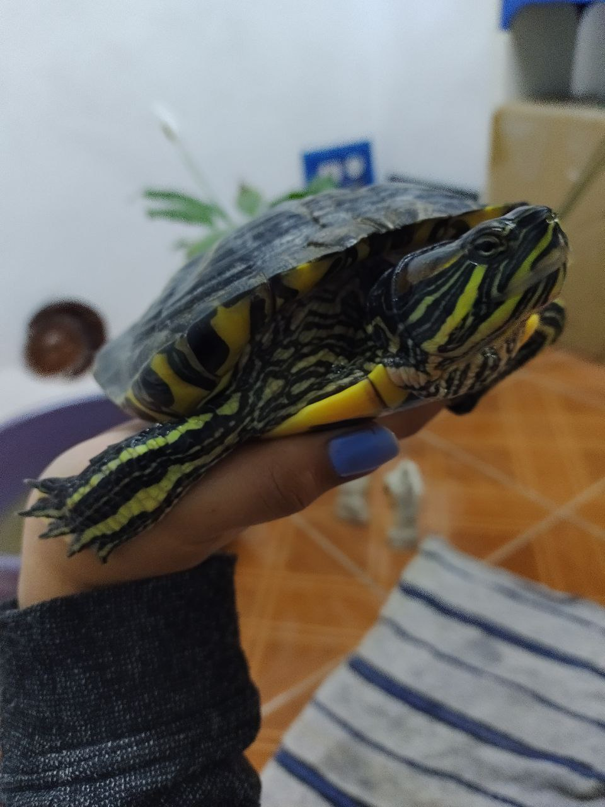
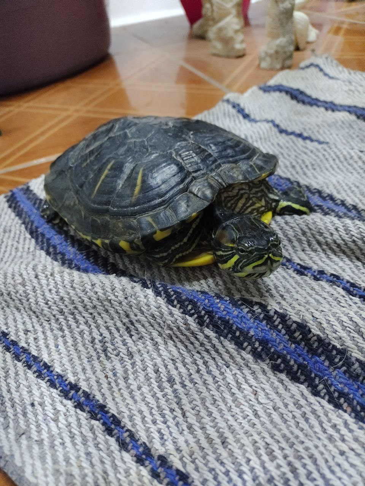

< Pechan >
Apodo: Pepe o Quishi
Nacimiento: 12-septiembre-2015
Edad: 6

Su nombre oficial es Pechan (en referencia a un personaje de Ranma 1/2).
Es un perro tamaño mediano, es color amarillo y ha sido parte de la
familia por 6 años. Oficialmente desconocemos su fecha de nacimiento porque lo
adoptamos de la calle pero posiblemente vivió ahí 1 año aproximadamente.

Le gusta dormir en el sol, cerca de alguno de nosotros o en el sillon; es listo sabe abrir
la puerta, se sienta para pedir comida y sabe hacer del baño en el patio; tiene miedo a los
cuetes y se esconde cuando los ecucha; es muy tierno y le encanta que lo apapachen.
< Coki >
Apodo: Coco
Nacimiento: 21-abril-2019
Edad: 2

El apodo de Coco se origino como una alteración de su
nombre.
Es un perro chihuahua cabeza de venado es color cafe con el pecho blanco.
Llego a la casa con una semana de nacida como regalo de un vecino, como es pequeña
y facil de cargar es la consentida de la casa; tiene muchos apodos pero solo uno es
relevante; lleva con nosotros dos años.

Le encanta dormir en el sol junto con Pepe y que la cargen; en invierno y otoño siempre
lleva sueteres hechos en casa;no le gusta que la despierten cuando duerme, que se
acerquen cuando come, que la dejen sola y es bastante inquieta cuando la bañan.
< Tuga >
Apodo: La condenada
Nacimiento: ¿?-¿?-2007
Edad: 14

Su apodo es porque si no le doy su comida dentro de su horario me
muerde y por correr y arñar cuando le toca baño.
Es una tortuga de rio oreja amarilla, fue comprada en Xochimilco por
una prima y aproximadamente un año despues llego a mi familia; mide aproximadamente
18 cm; le gusta tomar el sol y esconderse; solo come una marca y un tipo de alimento
si no es ese no come; desconocemos si es hembra o macho.

Tuga es considerada una sobreviviente, por haber caido dos veces de un segundo piso
en intentos de fuga y por fugarse por aproximadamente 3 años para ser encontrada
detras de un sillon (hasta el día de hoy se desconoce como sobrevivio); le gusta que
le rasquen el caprazón, su alimento en forma de chochitos y la lechuga; no le gustan
los camarones chiquitos, el alimento en forma de bolita y que la cargen; asusta a Coki
cuando sale corriendo.